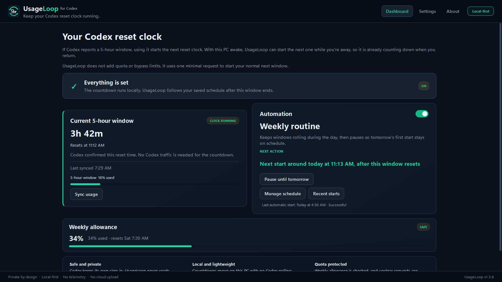
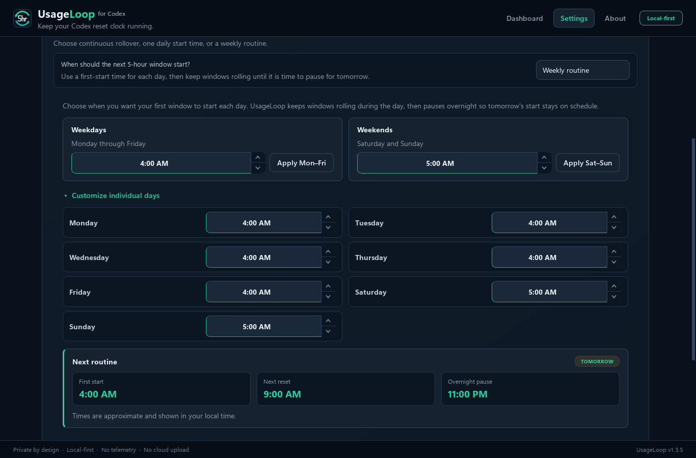
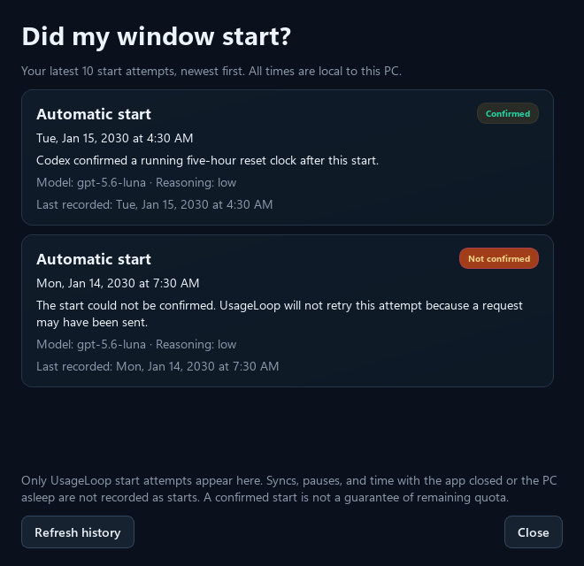

Local-first Codex window scheduler for Windows and Linux
Plan when your Codex day starts.
If your Codex account has a 5-hour usage window, UsageLoop can start its next reset clock with one small request at a time you choose. Set weekday and weekend times so the clock is already running when you sit down.
It does not add quota or bypass limits. It starts the normal next window you were going to receive anyway.
Free and open source, for Windows and Linux. Requires signed-in Codex and an awake computer with UsageLoop running. Pick your download.
- No API key
- No telemetry
- No scraping
- Open source

01
Why the 5-hour window matters
On accounts with a 5-hour window, the next reset clock normally starts with the first request after the previous window ends. If that happens while you are away, the clock waits until you use Codex again.
Say your window ends at 1:00 AM and UsageLoop starts the next one at 4:00 AM. When you sit down at 7:00 AM that clock has already run for three hours, so your next full reset arrives around 9:00 AM instead of noon.
You can work at 7:00 AM in either case if you have allowance left. Starting earlier brings the next reset forward if you use up that window. The start request uses some subscription allowance, and the weekly limit still applies.
02
What UsageLoop does
- Shows the current 5-hour countdown, reset time, and last-known usage.
- Shows weekly usage and blocks automatic starts when the weekly limit is nearly exhausted.
- Starts the next window one of three ways: as soon as the current one resets, at a set time each day, or on a weekly routine with its own time per day.
- Catches up once after sleep, restart, or your next sign-in.
03
Set a routine that matches your week
Most people do not start work at the same time seven days a week. Give weekdays one first-start time and weekends another, then override any single day if you want to.

Weekdays and weekends.
Set a time, press Apply Mon–Fri or Apply Sat–Sun, and the button confirms with “Applied”.
Custom days when you need them.
Open “Customize individual days” to give any day its own first-start time.
Rolling days, quiet nights.
After the first start, windows keep rolling as each one resets, then pause overnight so tomorrow begins on the time you chose.
Next routine, in plain numbers.
The card shows the upcoming first start, the next reset five hours later, and when the overnight pause begins.
Need a day off? Pause until tomorrow waits until tomorrow's configured first-start time without changing your routine. You can resume early from the Dashboard or tray.
Recent starts shows your last ten window-start attempts from the Dashboard or tray. See which starts were confirmed, not sent, or left uncertain. It reads existing local history and makes no Codex requests.

04
What it does not do
No quota tricks.
It cannot add quota, bypass a limit, or make Codex ignore one.
No private-data access.
It does not read credentials, prompts, responses, conversations, or account identifiers.
No hidden service.
It does not need an API key, administrator rights, root, a cloud account, or a background system service.
No tracking.
It does not scrape the Codex interface, upload local data, or send telemetry.
05
Download
Either build needs the Codex desktop app or CLI already installed and signed in. Both are 64-bit Intel or AMD.
Windows
An x64-compatible Windows PC. The installer is per-user and needs no administrator rights.
Download for WindowsThe installer is currently unsigned. Windows may show “Unknown publisher.” Download it only from the GitHub release and verify the checksum. If your organization blocks unsigned software, do not bypass that policy.
Linux
An x86_64 Linux desktop with a graphical session. Installing is per-user and needs no root.
Download for Linux x86_64Version 1.3.4. Verify the checksum, extract the archive, then run ./install.sh to add UsageLoop to your application menu. You can also run it directly from the extracted folder.
Tested on Ubuntu with GNOME. Other desktops should work but have not been checked. There is no ARM64 build.
06
Local-first by design
Codex owns authentication and network communication. UsageLoop talks to the installed Codex app-server locally and stores only the timing, usage, reset, and safe state needed to do its job. On Windows that state lives in your local app data, on Linux in your XDG state directory.
Automation and start-at-sign-in are off on a new install. The source is public, every release includes a checksum, and the test and packaging workflows for both platforms are visible on GitHub.
Read the privacy and trust details or report a vulnerability privately.
07
How it works, without the protocol tour
- 1Observe
UsageLoop takes several local observations instead of trusting one changing timestamp.
- 2Wait safely
It waits for the current reset, checks the weekly limit, and reserves only one attempt.
- 3Start and verify
When automation is on, it sends one minimal guarded request and reports success only after the new reset clock is visible.
08
Short answers
Who is this useful for?
Codex users on Windows or Linux whose account shows a 5-hour window and who want its next reset earlier in their workday. If your account only shows a weekly limit, the 5-hour scheduling feature does not apply. OpenAI controls the limits and can change their behavior.
Does starting a window use my allowance?
Yes. An automatic start sends one small Codex request through your existing sign-in. That uses subscription allowance. Watching the local countdown and checking GitHub for updates do not send a model request.
Does UsageLoop give me more Codex quota?
No. It cannot add quota or bypass either limit. It can only start the normal next 5-hour window after the current one ends.
How do updates work?
Only when you ask. Open Settings, choose Check for updates, and UsageLoop asks GitHub once, shows what changed, downloads the file for your platform, and checks its SHA-256 against the published checksum before installing anything. Checking and updating never send a Codex request. On Linux, a copy installed with install.sh can update itself in place; a portable copy you run from an extracted folder is left alone and shown the command to run instead.
Does it need root or administrator rights on Linux?
No. The Linux install is per-user: the app goes in your XDG data directory, the launcher in your own application menu, and nothing outside your home directory is touched. Removing it is ./install.sh --uninstall, which leaves your settings and start history in place.
Does it need my API key or Codex credentials?
No. UsageLoop uses your installed, already signed-in Codex app and never reads its auth files or tokens.
What if the Codex connection needs attention?
After updating or signing back in to Codex, choose Recheck Codex compatibility. It reads usage and supported models without sending a model request or changing your routine.
What happens if my computer is asleep or turned off?
UsageLoop cannot act while the computer is unavailable. After wake, restart, or sign-in, it checks your schedule and safety conditions before starting anything.
Why does Windows warn about the installer?
The installer does not yet have a paid code-signing certificate. The release includes a SHA-256 checksum and a public build workflow, but those are not a substitute for a signed publisher identity.
09